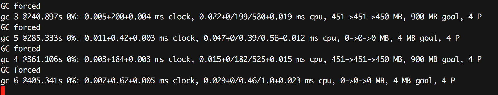
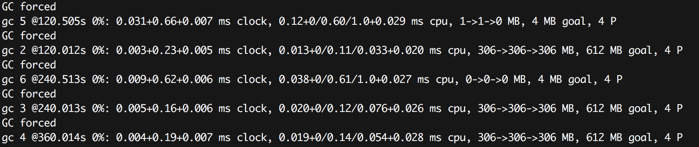

最近看到 yoko 翻译的一篇文章: [译] Go开源项目BigCache如何加速并发访问以及避免高额的GC开销, 翻译自 How BigCache avoids expensive GC cycles and speeds up concurrent access in Go, 应该是 Douglas Makey Mendez Molero 在阅读了 bigcache 的作者写的 bigcache设计文章Writing a very fast cache service with millions of entries in Go做的一些调研和总结。
我在刚读取这篇文档的时候，顺着连接把相关的文章都找出来细细读了一遍，结合bigcache的代码，仔细学习了相关的优化设计，感觉设计非常的精妙，所以特意根据自己的理解又总结了一篇。
bigcache的精妙的设计也吸引了fasthttp的作者Aliaksandr Valialkin，他在bigcache的基础上，结合自己的公司的使用场景，进一步的做了相应的优化， 也开源了这个项目fastcache, 本文在最后也做了介绍。
设计BigCache的初衷
bigcache的作者也不是想当然的开发一个库，而且项目遇到了需求。需求如下：
- 支持http协议
- 支持 10K RPS (5k 写，5k 读)
- cache对象至少保持10分钟
- 相应时间平均 5ms, p99.9 10毫秒， p99.999 400毫秒
- 其它HTTP的一些需求
为了满足这些需求,要求开发的cache库要保证：
- 即使有百万的缓存对象也要非常快
- 支持大并发访问
- 一定时间后支持剔除
作者考察了一番缓存框架比如memcached、redis、couchbase等，发觉都不太满足需求，因为这些都是独立的程序，访问它们需要网络的开销，延时无法保障，作者需要一个进程内的基于内存的cache库。虽然Go生态圈有众多的cache库如 LRU groups cache, go-cache, ttlcache, freecache,但是只有freecache满足需求，不过作者最后还是决定自己取开发一个cache库。
以上是bigcache诞生的背景，接下来我们欣赏一下bigcache和其它库优美的设计。
处理大并发访问
cache就像一个大的hashtable, 可不可以使用一个map[string][]byte + sync.RWMutex 实现满足需求的cache呢？
sync.RWMutex虽然对读写进行了优化，但是对于并发的读，最终还是把写变成了串行，一旦写的并发量大的时候，即使写不同的key, 对应的goroutine也会block住，只允许一个写执行，这是一个瓶颈，并且不可控。
解决并发的问题有一个方法叫做 shard (分片), 每个分片一把锁。 很多大并发场景下为了减小并发的压力都会采用这种方法，大的场景比如数据库的分片，小的场景就如刚才的场景。 Java 8 之前的ConcurrentMap就是采用分片(segment)的方式减少竞争, Go也有一个类似思想设计的map库:concurrent-map。
对于每一个缓存对象，根据它的key计算它的哈希值: hash(key) % N, N是分片数量。 理想情况下N个 goroutine 每次请求正好平均落在各自的分片上，这样就不会有竞争了，即使有多个goroutine落在同一个分片上，如果hash比较平均的话，单个shard的压力也会比较小。
竞争小了有什么好处？ 延迟可以大大提高，因为等待获取锁的时间变小了。
当然这里有一些要考虑的地方：
1、N的选择
既然分片可以很好的降低锁的竞争，那么N是不是越大越好呢？当然不是，如果N非常大，比如每个缓存对象一个锁，那么会带来很多额外的不必要的开销。可以选择一个不太大的值，在性能和花销上寻找一个平衡。
另外, N是 2的幂， 比如16、32、64。这样设计的好处就是计算余数可以使用位运算快速计算。
|
|
因为对于2的幂N，对于任意的x, 下面的公式成立:
|
|
所以只需要使用一次按位AND (&)就可以求得它的余数。
2、选择hash算法
以前已经有非常多的哈希算法，最近几年也出现了一些新的哈希算法，也被人使用Go语言来实现。
很显然，一个优秀的哈希算法要保证:
- 哈希值应该比较随机 (质量)
- 哈希速度比较快 (速度)
- 尽量不产生额外的内存分配,避免对垃圾回收产生压力 (耗费资源少)
项目hash-bench对常用的几种Hash算法进行了比较。
bigcache提供了一个默认的Hash的实现，采用fnv64a算法。这个算法的好处是采用位运算的方式在栈上进行运算，避免在堆上分配。
|
|
忽略内存开销
对于Go语言中的map, 垃圾回收器在 mark和scan阶段检查map中的每一个元素, 如果缓存中包含数百万的缓存对象，垃圾回收器对这些对象的无意义的检查导致不必要的时间开销。
bigcache的作者做了测试。他们测试了简单的HTTP/JSON序列化(不会访问cache)。 在cache为空的时候1万的QPS的耗时大约10毫秒。当cache填满的时候， P99的请求都会超过1秒。监控显示堆中包含4千万的对象， GC过程中的 mark 和 scan 也需要4秒。
我们可以很容易测试这种状况，比如下面的代码：
|
|
只有一个map对象，里面包含一百万的元素，每10毫秒删一个放一个。
并发量相当小，并且单个的goroutine也没有竞争，但是由于元素的数量巨大，垃圾回收在mark/scan阶段需要花费上百毫秒进行标记和遍历。

那么如何解决这个问题呢？
我们知道垃圾回收器检查的是堆上的资源，如果不把对象放在堆上，不就解决这个问题了吗？还真有这样的项目offheap，它提供了定制的Malloc() 和 Free()，但是你的缓存需要基于这些方法定制。当然一些基于垃圾回收的编程语言为了减少垃圾回收的时间，都会提供相应的库，比如Java: ChronicleMap, Part 1: Go Off-Heap。堆外内存很容易产生内存泄漏。
第二种方式是使用freecache。freecache通过减少指针的数量以零GC开销实现map。它将键和值保存在ringbuffer中，并使用索引查找对象。
第三种优化方法是和Go 1.5中一个修复有关(#9477), 这个issue还是描述了包含大量对象的map的垃圾回收时的耗时问题，Go的开发者优化了垃圾回收时对于map的处理，如果map对象中的key和value不包含指针，那么垃圾回收器就会对它们进行优化：
runtime: do not scan maps when k/v do not contain pointers
Currently we scan maps even if k/v does not contain pointers.
This is required because overflow buckets are hanging off the main table.
This change introduces a separate array that contains pointers to all
overflow buckets and keeps them alive. Buckets themselves are marked
as containing no pointers and are not scanned by GC (if k/v does not
contain pointers).This brings maps in line with slices and chans -- GC does not scan
their contents if elements do not contain pointers.Currently scanning of a map[int]int with 2e8 entries (~8GB heap)
takes ~8 seconds. With this change scanning takes negligible time.
所以如果我们的对象不包含指针，虽然也是分配在堆上，但是垃圾回收可以无视它们。
如果我们把map定义成map[int]int，就会发现gc的耗时就会将下来了。

遗憾的是，我们没办法要求用户的缓存对象只能包含int、bool这样的基本数据类型。
解决办法就是使用哈希值作为map[int]int的key。 把缓存对象序列化后放到一个预先分配的大的字节数组中，然后将它在数组中的offset作为map[int]int的value。
|
|
queue.BytesQueue是一个字节数组，可以做到按需分配。当加入一个[]byte时，它会把数据copy到尾部。
值得注意的是删除缓存元素的时候bigcache只是把它从的索引从map[uint64]uint32中删除了，并把它在queue.BytesQueue队列中的长度置为0。那么删除操作会不会在queue.BytesQueue中造成很多的“虫洞”？从它的实现上来看，会, 而且这些"虫洞"不会被整理，也不会被移除。因为它的底层是使用一个字节数组实现的，"虫洞"的移除是一个耗时的操作，会导致锁的持有时间过长。 那么寻找合适的"虫洞"重用呢？虽然遍历的方法寻找"虫洞"也是一个比较耗时的操作，我觉得这里有优化的空间。
bigcache只能等待清理最老的元素的时候把这些"虫洞"删除掉。
剔除
对于 bigcache来说， 剔除还有意义吗？或许有。如果我们不想使用某个key的缓存对象，我们可以把它删除。
首先，在增加一个元素之前，会检查最老的元素要不要删除。
|
|
其次，在添加一个元素失败后，会清理空间删除最老的元素。
同时， 还会专门有一个定时的清理goroutine, 负责移除过期数据。
另外需要注意的是缓存对象没有读取的时候刷新过期时间的功能，所以放入的缓存对象最终免不了过期的命运。
另外所有的缓存对象的lifewindow都是一样的，比如30分钟、两小时。
所以，如果你真的使用bigcache, 还是得需要注意它的这些设计，看看这些设计是否和你的场景相吻合。
fastcache
bigcache在特定时候还是有问题，就是当queue.BytesQueue的容量不够的时候，它会进行扩展，扩展是一个很重的操作，它会复制原来的数据到新的字节数组上。
fasthttp 的作者采用类似bigcache的思想实现了fastcache，他使用chunks [][]byte替换queue.BytesQueue，chunk是一个 ring buffer, 每个chunk 64KB。
|
|
虽然chunks [][]byte也包含很多的chunk, 但是由于chunk的size比较大，所以可以大大缩小垃圾回收需要mark/scan的对象的数量。带来的好处就是扩容的时候只需要增加更多的chunk即可。
删除还是一样，只是从map中删除，不会从chunks中删除。
fastcache没有过期的概念，所以缓存对象不会被过期剔除。
参考文档
- http://allegro.tech/2016/03/writing-fast-cache-service-in-go.html
- https://github.com/allegro/bigcache
- https://dev.to/douglasmakey/how-bigcache-avoids-expensive-gc-cycles-and-speeds-up-concurrent-access-in-go-12bb
- https://pengrl.com/p/35302/
- https://github.com/VictoriaMetrics/fastcache
- https://www.openmymind.net/Shard-Your-Hash-table-to-reduce-write-locks/
- https://medium.com/@itsromiljain/curious-case-of-concurrenthashmap-90249632d335
- https://segmentfault.com/a/1190000012926722
- https://github.com/coocood/freecache